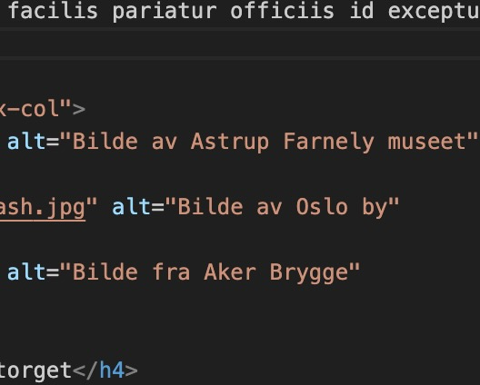
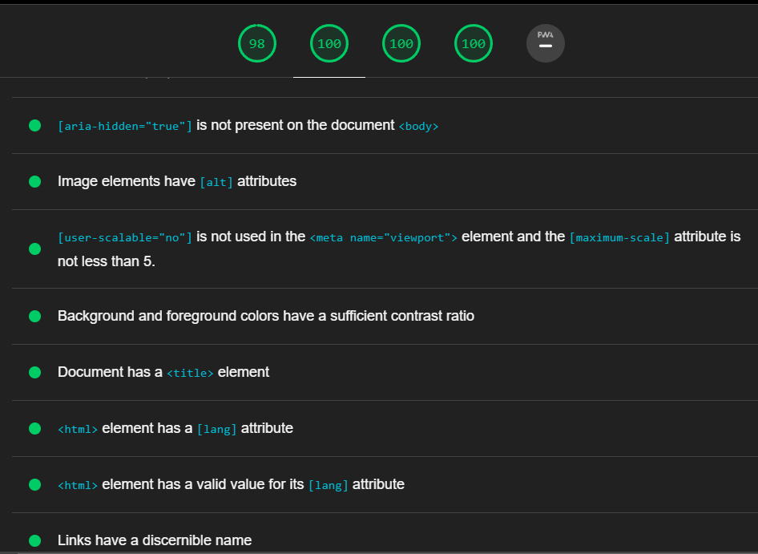

Vi har valgt et enkelt og intuituvt design med en layout som gjentar
seg på de ulike nettsidene, for eksempel ved gjenbruk av borders. Vi har også brukt samme «header»
«navigation-bar" og «footer» på alle sidene, utenom topical. Vi har tydelige linker til de ulike
sidene i «navigation-bar’en», og tydeliggjort hvilken side som er aktiv. Vi har også vært opptatte
av å ha informative overskrifter som gjør det enkelt å orientere seg på nettsiden og riktig
nummerert i koden. Alle våre nettsider har toleranse for brukerfeil og tilgang til alle funksjoner
og deler av nettsiden. Vi har ikke forventet forhpndskunnskap av brukerene for å kunne ta i bruk
nettsidene våres.
Fargevalg og kontrast
Før vi startet med arbeidet valgte vi en fargepallett som går igjen
gjennom alle
nettsidene våre. Vi har lagt vekt på sterk kontrast i fargevalg av tekst, som gjør nettsidene mer
tilgjengelig for svaksynte eller fargeblinde.
Navngivning
Konsekvent bruk av «sematic elements», «classes» og «headings». Vi har
også
gjenbrukt klasser og elementer etter beste evne. Vi har forsøkt å bruke intuitive navn på klassene,
slik at en annen programmerer kan sette seg inn i arbeidet på enklest mulig måte. I tillegg til
kommentarer i både html og CSS.
Skalering
Nettsiden er tilpasset skalering til både små og store skjermer. Ved å
bruke
utvikler-applikasjonen til google-chrome har vi testet nettsidene. Og har gjort nødvendige endringer
for at elemententene skal skalere på en god måte.
ACCESSIBILITY-TEST

Tilpasning til text reader
For å gjøre nettsiden mer leselig for blinde, svaksynte eller personer med
lesevansker har vi deklarert språk «no» i html-elementet, slik at text-readeren vet hvilket språk
den skal lese opp på. Vi har også alternativ tekst tilhørende alle relevante bilder, som gjør
nettsiden mer leselig for blinde, svaksynte eller personer med lesevansker som bruker text-reader.
For bilder som utelukkende har funksjon som design-elementer har vi inkludert «null alt text»
(alt="") som sikrer at de ikke blir plukket opp av screen-readers. Alle våre linker har tekst, som
gjør det mulig å få med seg selv med screen reader.

Passed audits
Accessibility-testen ga oss flere passed audits som gir en indikasjon på at
siden vår er tilgjengelig på flere måter, og fungerer godt for de fleste.
ACCESSIBILITY-TEST
Fra begynnelsen av arbeidet med nettsiden hadde vi «accesibility» i fokus. I
sluttfasen av arbeidet testet vi programmet med lighthouse, og gjorde følgende forbedringer:
Etter anbefaling fra accesibility-testen endret vi bilde-format til .webp for raskere innlastning.
La til «meta-language» på alle nettsidene.
Etter å ha rettet opp i alle punktene foreslått av lighthouse endte vi opp med 100% på alle områder.